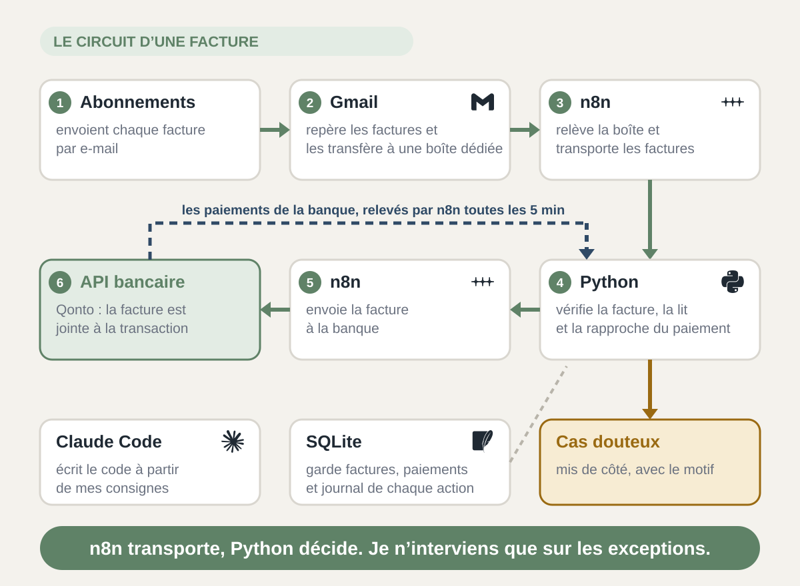

Automatiser le rapprochement des factures
Une tâche manuelle rencontrée en alternance, que j’ai automatisée.
Chaque facture reçue par e-mail est vérifiée, rapprochée de son paiement et jointe à la transaction bancaire. Testé avec mes propres factures.
Une facture par paiement, à la main.
En alternance, il fallait retrouver la facture de chaque paiement, la télécharger et la joindre à la bonne transaction bancaire.
Dans plusieurs boîtes mail et dans l’espace client de chaque fournisseur.
Montant, date, fournisseur : chaque transaction comparée, une par une.
Au moment de la clôture, avec les relances du cabinet comptable.
Avant, à la main. Après, automatique.
J’ai d’abord appliqué l’idée à mes propres abonnements, qui m’envoient tous leurs factures par e-mail.
Résultat : l’humain n’intervient plus que sur les exceptions.
Chaque outil a un rôle précis.
Je ne suis pas développeur. J’ai défini le besoin et les règles, choisi les outils avec l’IA, puis testé le résultat. Le code a été écrit par l’IA.

 Gmail
GmailUn filtre repère les factures et les transfère vers une boîte dédiée.
Relève la boîte de collecte, récupère les paiements de la banque et lui envoie la facture.
 Python
Python FastAPI
FastAPIVérifie l’expéditeur, lit la facture, la rapproche du bon paiement.
 SQLite
SQLiteFactures, paiements et journal de chaque action, retrouvables.
Reçoit la facture, jointe directement à sa transaction.
 Claude Code
Claude Code Git
GitL’IA écrit le code à partir de mes consignes. Git sauvegarde chaque version.
Ma règle : n8n transporte, Python décide. Je valide chaque étape avant de passer à la suivante.
Une solution qui marche, sur une partie du problème.
Testé en conditions réelles, de l’e-mail jusqu’au rapprochement.
Avec mes propres factures, de l’e-mail reçu jusqu’au rapprochement avec le paiement.
Seuls les cas douteux me reviennent, avec le motif.
Des outils gratuits ou open source, sur mon ordinateur.
Pas encore géré : les factures envoyées sous forme de lien, celles d’un espace client et les factures scannées.
Côté banque : construit sur l’API Qonto, testé sur une copie locale de l’API, jamais sur un vrai compte. Aucune donnée d’UDC.
Le premier module d’un outil plus large.
Cette automatisation devient le premier module d’AI Business Headquarters, un outil en construction où je réunis mes automatisations.
Un export prêt pour l’expert-comptable.
Import des relevés, quelle que soit la banque.
 Ollama
OllamaPour les factures scannées, toujours contrôlée par les règles.
Maquette de la vision : des agents finance, RH, juridique, stratégie et opérations, connectés aux outils de l’entreprise. Pas encore développée.